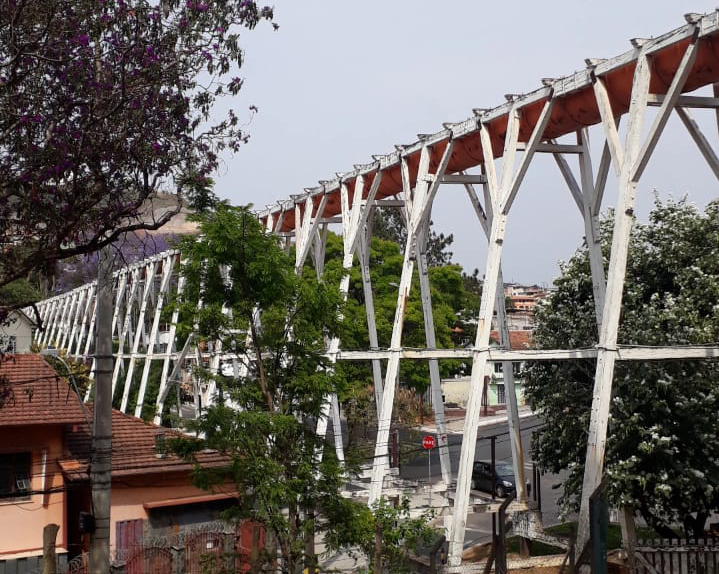

BICAME

O Bicame de Nova Lima-MG foi construído em 1890 pela Saint John Del Rey Mining Company para conduzir a água do Rego Grande até a Mina da Morro Velho e conta com aproximadamente 200m lineares. O Bicame é uma importante referência da paisagem urbana da cidade e excelente ponto de encontro e interação dos nova-limenses. Foi escolhido em 2002 como o símbolo da cidade, em uma iniciativa popular que foi oficializada pelo povo.